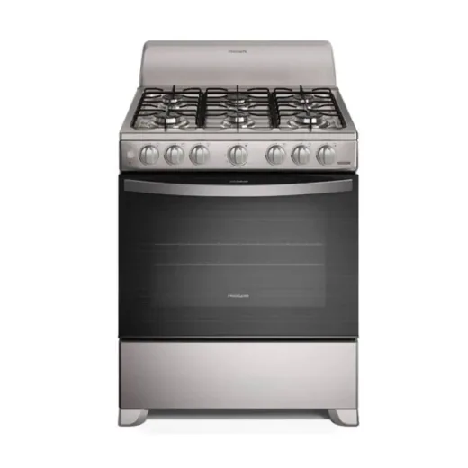
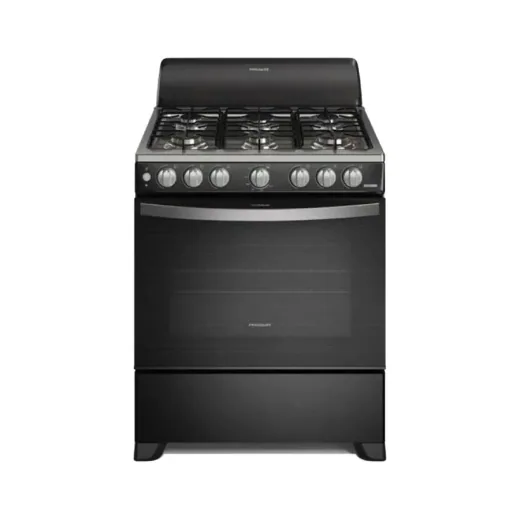
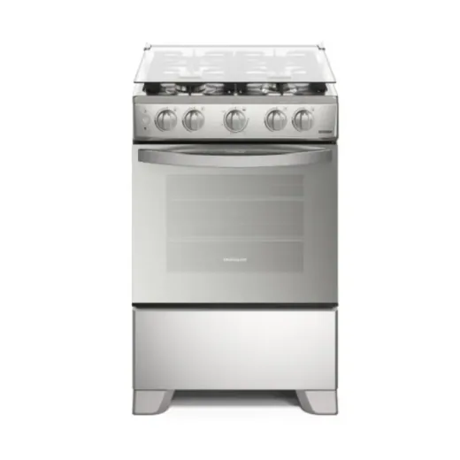
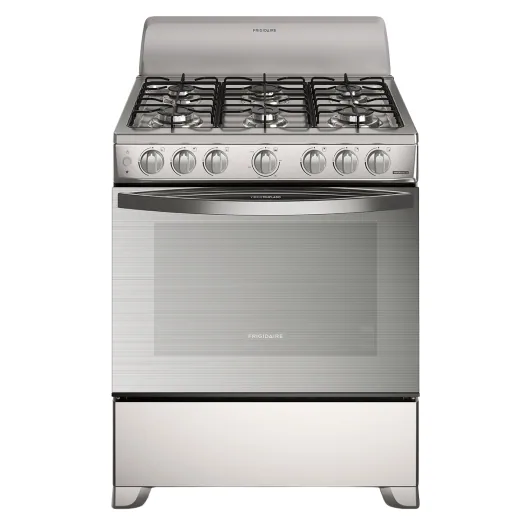
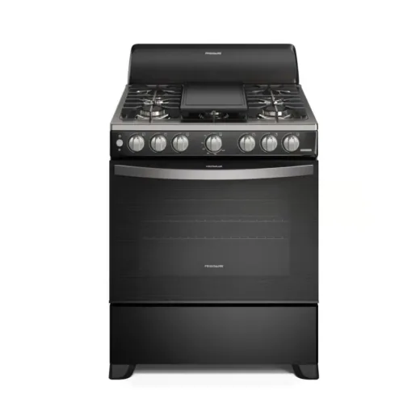
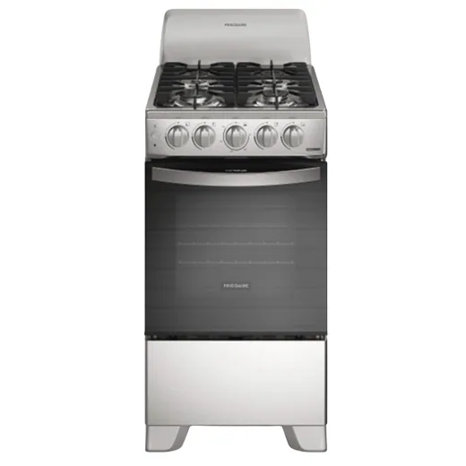
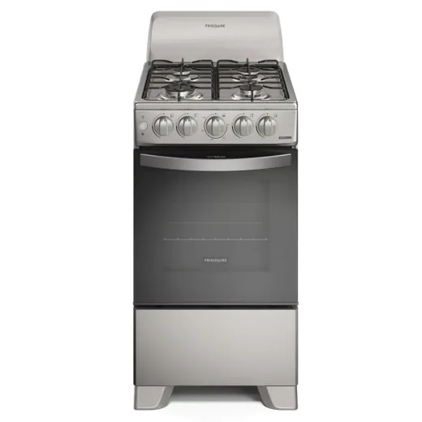

Frigidaire · Modelo FKGN30C3MYG
Estufa a Gas Frigidaire 30 Pulgadas · Alta Calidad
L 9,490
Más barato en Diunsa · ahorras hasta L 809 frente a la tienda más cara
Precio en cada tienda
| Tienda | Precio | Antes | Disponibilidad | |
|---|---|---|---|---|
| Diunsa | L 9,490 | Disponible | Ver en tienda › | |
| La Curacao | L 9,997 | Disponible | Ver en tienda › | |
| Lady Lee | L 10,299 | Disponible | Ver en tienda › |
Precios referenciales tomados de cada tienda el 14 de noviembre de 2026. El precio válido es el que muestra la tienda al comprar.
Otros estufas Frigidaire

Estufa a Gas Frigidaire 30'' 6 QuemadoreL 8,999En 3 tiendas · más barato en Elektra
Estufa a Gas 24" de 4 Quemadores Acero Inoxidable · Frigidaire · Modelo Fkgn24C3MYIL 8,999En Lady Lee
Estufa de Gas Frigidaire 30 Pulgadas 6 Quemadores FKGN30C3MYIL 9,995En Gallo más Gallo
Estufa a Gas Frigidaire 30'' 6 QuemadoreL 10,990En 2 tiendas · más barato en Diunsa Estufa de Gas Frigidaire 30P FKGN30C3YIL 12,399En Elektra
Estufa de Gas Frigidaire 30P FKGN30C3YIL 12,399En Elektra
Estufa de Gas Frigidaire 20 Pulgadas 4 Quemadores FKGN20C3MYIL 5,995En Gallo más Gallo
Estufa a Gas Frigidaire 20" 4QUEM Plate.L 5,990En 4 tiendas · más barato en Diunsa Estufa de gas Frigidaire 6 Quemadores FKGN30C3IYIL 12,997En La Curacao
Estufa de gas Frigidaire 6 Quemadores FKGN30C3IYIL 12,997En La Curacao